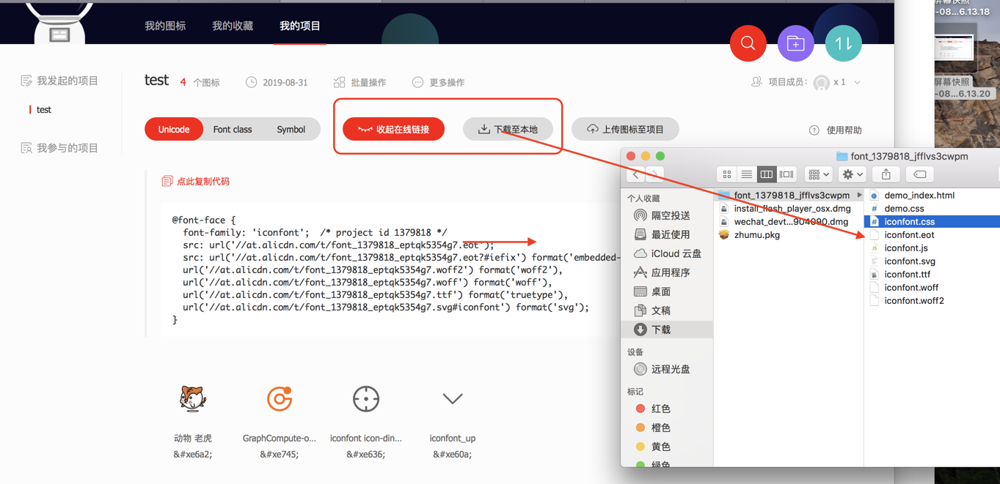

svg-sprite
前端icon的演进史
- img图片
使用图片浪费资源
- sprite雪碧图
虽然只加载一张图片，但是后期修改添加icon时，容易对前边已有的icon坐标造成误操作，维护困难
- Font库 Font Awsome
找起来很费劲，不能满足所有你需要的图标。适用于没有UI追求的初创公司。
- iconfont
种类/数量多，有几百个公司的开源库，还支持自定义创建图表库，能满足所有需求。
iconfont使用方法
- unicode
优点：兼容性好 支持IE6+浏览器，font-size、color直接控制大小颜色
缺点：语义性差，因为是字体所以无法控制多色图标颜色（遇多色图标自动去色）
1. 复制项目下生成的font-face(或直接用远程文件)
@font-face {
font-family: 'iconfont';
/* project id 1379818 */
src: url('https://at.alicdn.com/t/font_1379818_eptqk5354g7.eot');
src: url('https://at.alicdn.com/t/font_1379818_eptqk5354g7.eot?#iefix') format('embedded-opentype'),
url('https://at.alicdn.com/t/font_1379818_eptqk5354g7.woff2') format('woff2'),
url('https://at.alicdn.com/t/font_1379818_eptqk5354g7.woff') format('woff'),
url('https://at.alicdn.com/t/font_1379818_eptqk5354g7.ttf') format('truetype'),
url('https://at.alicdn.com/t/font_1379818_eptqk5354g7.svg#iconfont') format('svg');
}
2. 定义要使用的iconfont样式
.iconfont {
font-family: "iconfont"!important;
font-size: 16px;
font-style: normal;
-webkit-font-smoothing: antialiased;
-webkit-text-stroke-width: 0.2px;
-moz-osx-font-smoothing: grayscale;
}
3. html中使用字体编码
<i class="iconfont"></i>
- font-class
优点：语义性强，图标类别一目了然。兼容性良好支持IE8+，及现代浏览器
缺点：还是字体无法控制多色图标颜色
1. 复制项目下生成的css文件并引入
<link rel="stylesheet" href="https://at.alicdn.com/t/font_1379818_ikubw1ig6m.css">
2. 按类名使用 //iconfotn：固定类名
<i class="iconfont icon-icon11"></i>
- symbol
优点：可以像字体那样控制font-size、color直接控制大小颜色。支持多色图标 更有色彩。矢量 不失真。减少http请求。
缺点：兼容性差 支持IE9+，及现代浏览器。浏览器渲染svg的性能一般，不如png。
1. 引用项目下载下来的iconfont.js文件，或者远程js //at.alicdn.com/t/font_1379818_v3d94rjzo4.js
<script src="iconfont.js"></script>
2. 加入通用css样式
.icon {
width: 1em;
height: 1em;
vertical-align: -0.15em;
fill: currentColor;
overflow: hidden;
}
3. html中使用
<svg class="icon" aria-hidden="true">
<use xlink:href="#icon-icon-test"></use>
</svg>
问题：现在所有的svg-sprite都是通过iconfont 的iconfont.js生成的。他是一段用js来生成的svg代码，所有图标icon很不直观，完全不知道哪个图标名对应哪个图标
- 不能按需加载：所有图标同时生成在一个iconfont.js文件中。
- 自定义性差：通常导出的svg包含大量的无用信息（编辑器信息、注释。。。）。
- 添加不友善：如有自定义的图标，需要先上传到iconfont库中，和其他图标整合后，重新下载，很繁琐。
svg-sprite
svg好比舞台，symbol是舞台上一个一个组装的原件，而symbol需要使用use才生效，所以symbol+use ==> svg-sprite
<svg>
<symbol>
<!-- 第1个图标路径形状之类代码 -->
</symbol>
<symbol>
<!-- 第2个图标路径形状之类代码 -->
</symbol>
<symbol>
<!-- 第3个图标路径形状之类代码 -->
</symbol>
</svg>
使用webpack loader的svg-sprite-loader可以将多个svg打包成svg-sprite.
vue-cli默认使用url-loader对svg进行处理，会将他们放在/img目录下，这时引入svg-sprite-loader会有些问题
//默认`vue-cli` 对svg做的处理，正则匹配后缀名为.svg的文件，匹配成功之后使用 url-loader 进行处理。
{
test: /\.(png|jpe?g|gif|svg)(\?.*)?$/,
loader: 'url-loader',
options: {
limit: 10000,
name: utils.assetsPath('img/[name].[hash:7].[ext]')
}
}
解决方案有两种：
- 一是将test中的svg去掉，但是这样不好，不能保证没有用作图片的svg
- 二是引入的第三方库中可能用到svg最安全的是使用webpack的exclude和include，让svg-sprite-loader只处理你指定文件夹下的svg，url-loader处理除此之外的svg
// 设置svg图片-图标处理方式 vue.config.js
config.module
.rule('svg')
.exclude.add(resolve('src/icons')) // 除了src/icons下的svg都是用url-loader来处理
.end()
config.module
.rule('icons')
.test(/\.svg$/)
.include.add(resolve('src/icons')) // svg-sprite-loader只处理src/icons下的svg
.end()
.use('svg-sprite-loader')
.loader('svg-sprite-loader')
.options({
symbolId: 'icon-[name]'
})
.end()
// 有了这个区分，就要求我们规范的管理SVG图标，将其统一放置在src/icons目录下
自动导入生成SVG Sprite require.context，在与@/icons/svg同级目录下的index.js编写
// 使用如下代码导入项目中所有的icon
const requireAll = requireContext => requireContext.keys().map(requireContext)
//在svg文件夹下，不检索其子目录，寻找后缀名为.svg的能被require所有资源图标
const req = require.context('./svg', false, /\.svg$/) // （1-源svg文件夹，2-是否检索下级目录，3-匹配资源正则表达式）
requireAll(req)
使用
- 写<svg-icon>组件
<template> <div v-if="isExternal" :style="styleExternalIcon" class="svg-external-icon svg-icon" v-on="$listeners" /> <svg v-else :class="svgClass" aria-hidden="true" v-on="$listeners"> <use :xlink:href="iconName" /> </svg> </template><script> export default { name: 'SvgIcon', props: { iconClass: { type: String, required: true }, className: { type: String, default: '' } }, computed: { isExternal() { return this.isExternal(this.iconClass) }, iconName() { return `#icon-${this.iconClass}` }, svgClass() { if (this.className) { return 'svg-icon ' + this.className } else { return 'svg-icon' } }, styleExternalIcon() { return { mask: `url(${this.iconClass}) no-repeat 50% 50%`, '-webkit-mask': `url(${this.iconClass}) no-repeat 50% 50%` } } }, methods: { // 判断是否是外部图标 isExternal(path) { return /^(https?:|mailto:|tel:)/.test(path) } } } </script><style scoped> .svg-icon { width: 1em; height: 1em; vertical-align: -0.15em; fill: currentColor; overflow: hidden; } .svg-external-icon { background-color: currentColor; mask-size: cover!important; display: inline-block; } </style>页面使用
<svg-icon icon-class="eye" class-name="eyeStyle" />